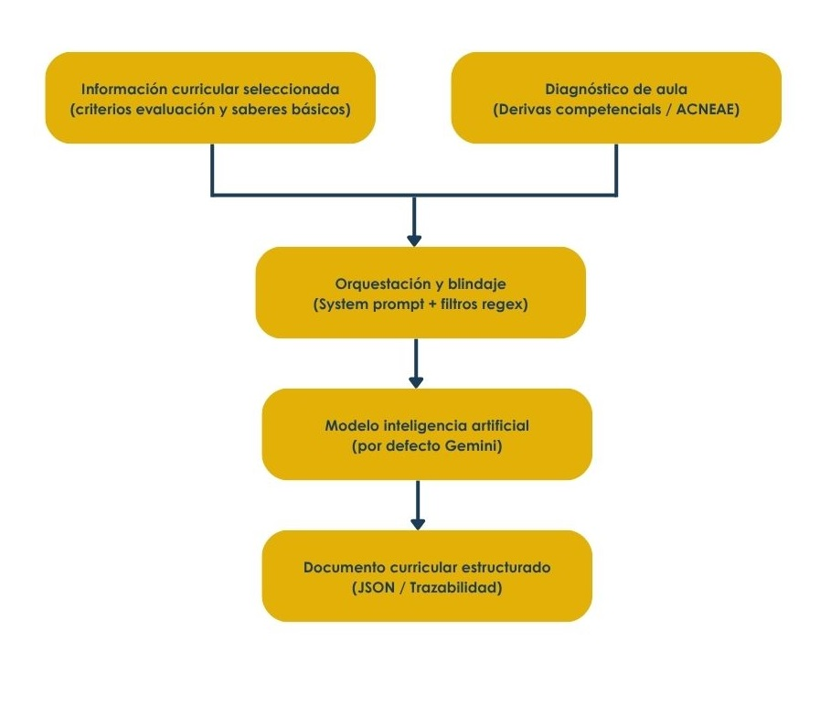
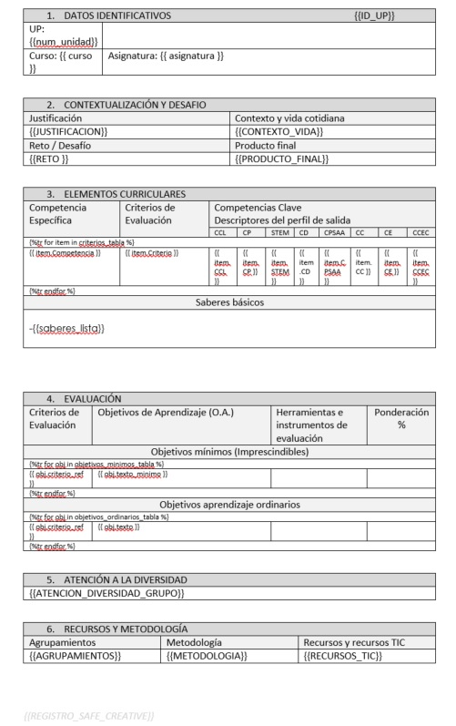
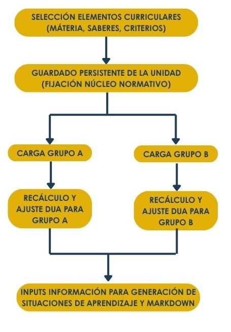
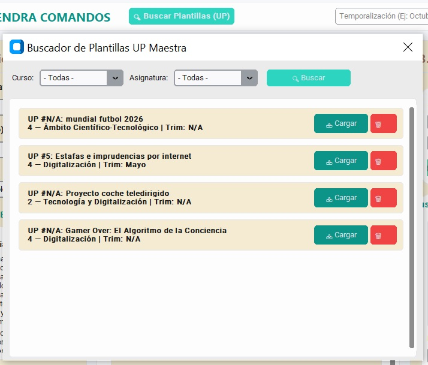

Motor de generación de unidades didácticas
El núcleo de diseño pedagógico de ALMENDRA no opera como un sistema generativo libre, sino como un entorno estructurado bajo una arquitectura híbrida de Generación Aumentada por Recuperación (RAG - Retrieval-Augmented Generation). El software realiza una extracción previa de datos normativos y analíticos contextuales ("contexto duro") desde el repositorio local para, posteriormente, orquestar y acotar el comportamiento del modelo lingüístico de inteligencia artificial, garantizando una propuesta curricular técnica y adaptada a la realidad del aula.

Extracción e indexación del contexto
Antes de invocar los servicios de inteligencia artificial, el módulo especializado extrae variables inequívocas desde la base de datos relacional local. Esta ingesta de contexto normativo se estructura en tres vectores informacionales:
- Elementos Curriculares LOMLOE: Aislamiento de las variables macro del diseño instruccional: nivel, etapa educativa, denominación oficial de la materia, saberes básicos, criterios de evaluación y sus correspondientes competencias específicas asociadas.
- Analíticas Reales del Grupo-Aula: Si la unidad se vincula a un grupo matriculado en vigor, el sistema inyecta la tasa de descriptores operativos deficitarios (brechas de aprendizaje colectivas detectadas en la fase diagnóstica) y los perfiles de alumnado con Necesidades Específicas de Apoyo Educativo (NEAE / ACNEAE), forzando la inclusión de estrategias DUA y pautas de acceso específicas.
- Vademécum Taxonómico: Matriz de control relacional que extrae los verbos imperativos obligatorios adecuados al descriptor analizado. Esta lógica determina el techo cognitivo de la unidad (ej., diferenciar la complejidad operatoria entre «Identificar» y «Diseñar») y parametriza el producto final esperado (ej., maqueta, informe técnico o documentación gráfica) mediante el cruce correlacional entre los descriptores operativos.
Orquestación del motor generativo
Una vez compilado el mapa determinista de las obligaciones y las contingencias del aula, se establece comunicación asíncrona mediante llamada API al modelo de inteligencia artifical para procesar la información e iniciar el co-diseño de la unidad didáctica bajo las siguientes especificaciones técnicas:
- Objetivos de Aprendizaje: Transposición de los criterios de evaluación en objetivos medibles de aula. El motor tiene la instrucción obligatoria de generar una estructura binaria emparejada para cada criterio: un aprendizaje imprescindible (O.A.M.) y un objetivo de aprendizaje Ordinario (O.A.), restringiendo su redacción al inventario de verbos taxonómicos suministrados por la base de datos.
- Unidad didáctica: Conceptualización del entorno didáctico (justificación pedagógica, contexto vital del hilo conductor, reto o centro de interés y marco metodológico) estructurado en un formato JSON estricto para garantizar su posterior parseo e integración en el código.
Arquitectura del System Prompt y protocolos de salida
El control del comportamiento semántico de la inteligencia artificial se implementa mediante un System Prompt base que fija la personalidad técnica del agente como un diseñador curricular experto en la normativa española LOMLOE. Para asegurar la aplicabilidad del documento generado, el núcleo operativo impone cuatro «Reglas de Oro» deterministas:
- Realismo Material: Prohibición estricta de proponer infraestructuras tecnológicas complejas o hardware avanzado si no corresponden explícitamente a una materia científico-técnica.
- Micro-secuenciación Estructurada: Obligación de pautar cada sesión en tres fases claras: Inicio, desarrollo y cierre.
- Estilo Formal: Establece por imperativo un uso riguroso de léxico docente y técnico, eliminando cualquier tono infantil o impreciso.
- Bucle Cerrado Evaluativo: Restricción de diseño que exige que toda actividad instruccional planteada derive obligatoriamente en una evidencia o producto tangible evaluable.
Adicionalmente, el sistema implementa un Mecanismo de Blindaje de Salida post-generación. El código de ALMENDRA intercepta el flujo de texto devuelto por la API y, en caso de constatar que se trabaja sobre una disciplina de humanidades o no técnica (ej., Geografía e Historia o Lengua Castellana y Literatura), ejecuta funciones de filtrado proactivo que eliminan cadenas prohibidas (tales como "Arduino" o "Micro:bit"), sustituyéndolas automáticamente por "recursos analógicos y fuentes bibliográficas", blindando al docente frente a propuestas económicamente inviables para los centros públicos.
Compilación automatizada e inyección de plantillas de datos
La persistencia de los documentos o la transferencia de datos hacia subagentes analíticos se procesa mediante plantillas estructuradas, gestionadas de manera desacoplada de la interfaz gráfica de usuario.
El proceso de inyección se articula bajo la siguiente lógica procedimental:
- Lectura del Fichero Base: Apertura e inspección del archivo maestro indexado con marcadores de posición vacíos bajo la sintaxis de doble llave (ej., {{ETAPA_EDUCATIVA}}, {{DESCRIPTORES_OPERATIVOS}}).
- Compilación y Serialización de Diccionarios: Unificación de los metadatos de la sesión y los registros de la base de datos en una estructura de diccionario global. Las colecciones complejas (matrices competenciales o listados de saberes básicos) son procesadas mediante serialización JSON para conservar su estructura anidada.
- Inyección y Tratamiento de Excepciones: Ejecución de un bucle optimizado de sustitución de cadenas (.replace()) que reemplaza las etiquetas marcadas por sus valores normalizados. Ante la ausencia de un grupo-aula cargado en la sesión, el motor inyecta dinámicamente cadenas informativas de marcado (placeholders) para alertar al docente de la necesidad de complementar dicho campo de forma manual.
Persistencia Física y Marcado de Autenticidad: Una vez completado y validado el flujo de texto estructurado, el sistema estampa una marca de agua digital correspondiente al Registro Safe Creative y consolida la información escribiendo un nuevo archivo físico e independiente, listo para operar como un prompt maestro o documento de programación definitivo.

Dada la naturaleza del propio software, el formato y forma de estas plantillas son totalmente adaptables a un estilo concreto, ya sea del centro educativo, corporativo o institucional.
Persistencia curricular y ajuste dinámico de unidades didácticas
ALMENDRA implementa un mecanismo de guardado persistente de unidades didácticas que actúa como puente arquitectónico entre la selección normativa y la posterior generación de materiales. Este procedimiento no almacena la propuesta narrativa en texto plano, sino que congela y guarda la estructura de datos pura de los elementos curriculares seleccionados (materia, curso, Saberes Básicos, Criterios de Evaluación y Competencias Específicas asociadas).

La ventaja diferencial de esta persistencia radica en su capacidad de reutilización y reajuste dinámico:
- Fijación del Estándar Curricular: El docente puede diseñar y guardar el esqueleto de una unidad didáctica una sola vez, manteniendo inalterables los elementos curriculares imprescindibles exigidos por la normativa educativa.
- Cargado y adaptación al grupo-clase: Al recuperar una unidad guardada y vincularla a un grupo-clase específico, el motor analítico de ALMENDRA no requiere volver a seleccionar los criterios. En su lugar, lee el expediente del grupo seleccionado y ejecuta instantáneamente un cálculo de ajuste en función del diagnóstico del aula, recalculando la tasa de descriptores operativos deficitarios y reinyectando las medidas DUA y las adaptaciones NEAE/ACNEAE correspondientes a ese alumnado en particular.
Este guardado persistente constituye una fase crítica dentro del flujo de trabajo de ALMENDRA, ya que actúa como el insumo de datos validado para los módulos posteriores:
- Prerrequisito para situaciones de aprendizaje (SdA): Al fijar formalmente los elementos curriculares de la unidad, se puede extraer el producto final curricularizado y el marco de saberes con total precisión, garantizando que la SdA resultante esté 100% alineada con la unidad de origen.
- Prerrequisito para la Ingeniería de Prompts (Markdown): La compilación de archivos .md utiliza los registros de la unidad persistida para rellenar los bloques preestablecidos con los placeholders, asegurando que el Prompt Maestro exportado contenga el mapa completo del currículo y del grupo.
Menú del programa de guardado y selección de unidades didácticas maestras